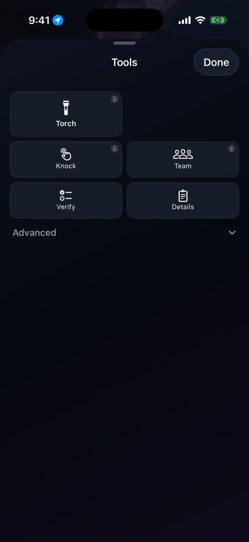
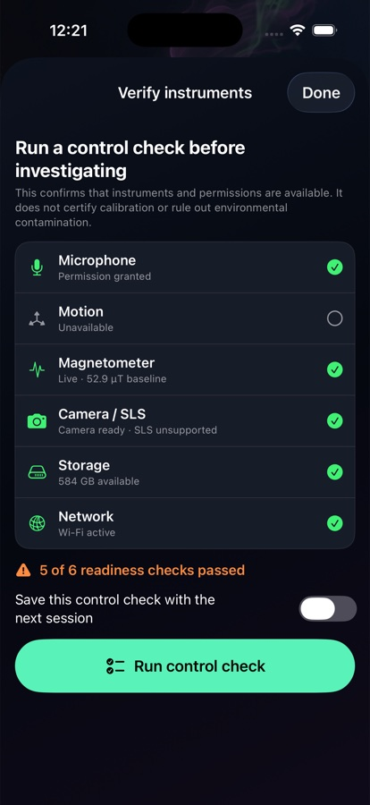

Live sensors
Magnetometer, barometer, motion, and compass power free modes and tools. UWB trigger object is Pro on supported hardware.
Camera, Torch, Radar, and Knock never paywall. Team, Music Box, Estes, Vigil, and more are Pro.
From the Investigate Tools sheet and home chips. Free tools never paywall. Pro tools use one free try (except Spirit Speak / Live Chat = 24h window).
Never paywalled - available to every investigator.
Show a PRO badge in-app. One free try each - except Live Chat (24h window).
Free capture tools first. Pro instruments layer on when you need Team radio, SLS, Estes, Vigil, and more.

Camera, Torch, Radar, and Knock never paywall. Word Burst, Grid, Estes, Vigil, Classes, Team, and Music Box show a PRO badge and use one free try.

Free pre-session control check: microphone, motion, magnetometer baseline, camera / SLS capability, storage, and network.
Magnetometer, barometer, motion, and compass power free modes and tools. UWB trigger object is Pro on supported hardware.
SLS is a Pro mode (one free try). Motion-Grid is a Pro tool that auto-tags motion zones on the timeline.
Spectrogram, cleanup, markers, M4A/WAV/ZIP, and Library backup are free. PDF, Enhance EVP, and 9:16 export are Pro.
Start free tonight. Unlock Pro when you need Team radio, SLS, and the advanced lab.